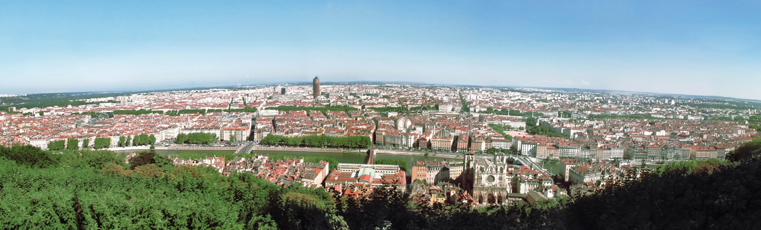
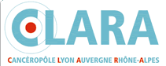

|
p53 MARATHON 2007 |
 |
| IARC, 150 cours Albert-Thomas, 69372 Lyon Cedex 08, France. | IARC TP53 Database : http://www-p53.iarc.fr | |
|
3rd International Workshop on Mutant p53 Deregulating the p53 Network : Origin and Consequences of TP53 mutations 13-15 November 2007, Lyon, France |
& |
Symposium on Li-Fraumeni syndrome Phenotype of TP53 germline mutations in humans 15-16 November 2007, Lyon, France |
|
 |
| LATEST NEWS | Updated Programme (6 November 2007) | Accommodation | Contact | Maps & directions |
We are pleased to announce the third international workshop focused on mutant p53, that will be held at IARC in Lyon this November.
This workshop will cover topics ranging from the origin of mutations to the evaluation of their biological and clinical impacts and therapeutic use in human cancers.
|
|
Organizers: |
Funding bodies: with support from:  |